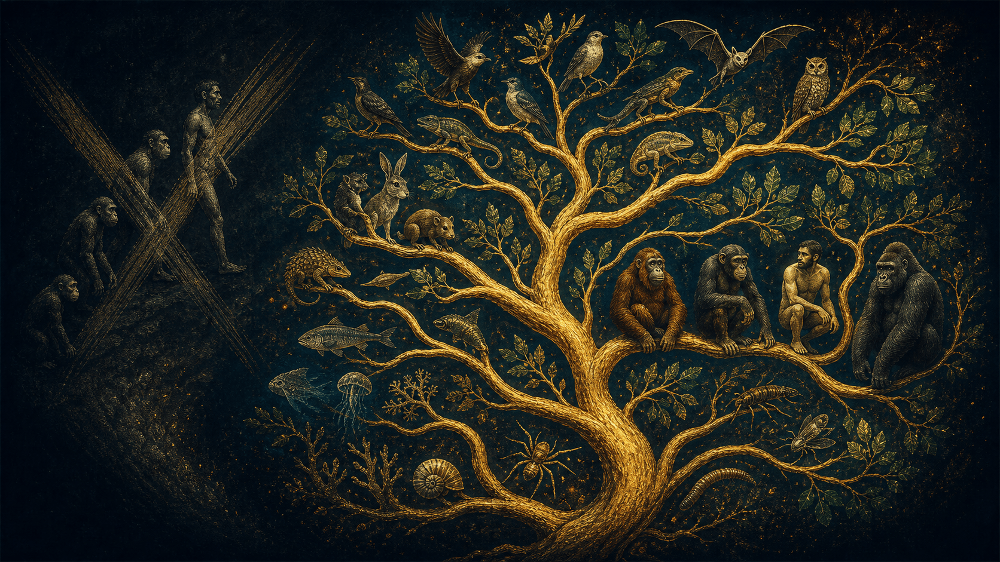
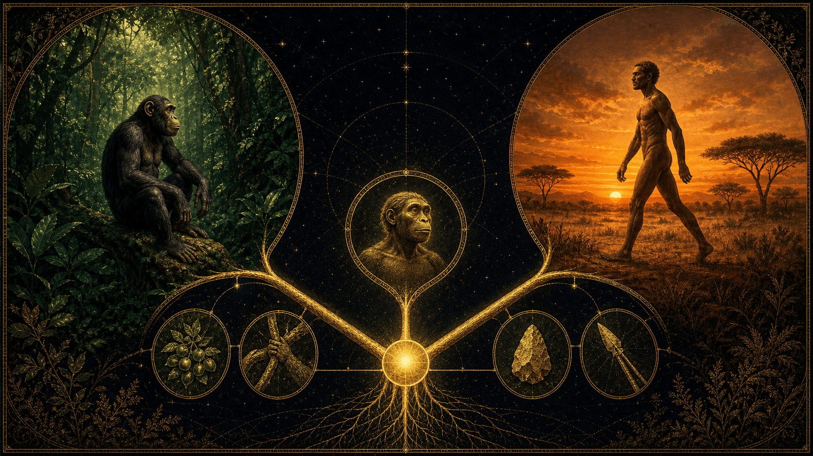
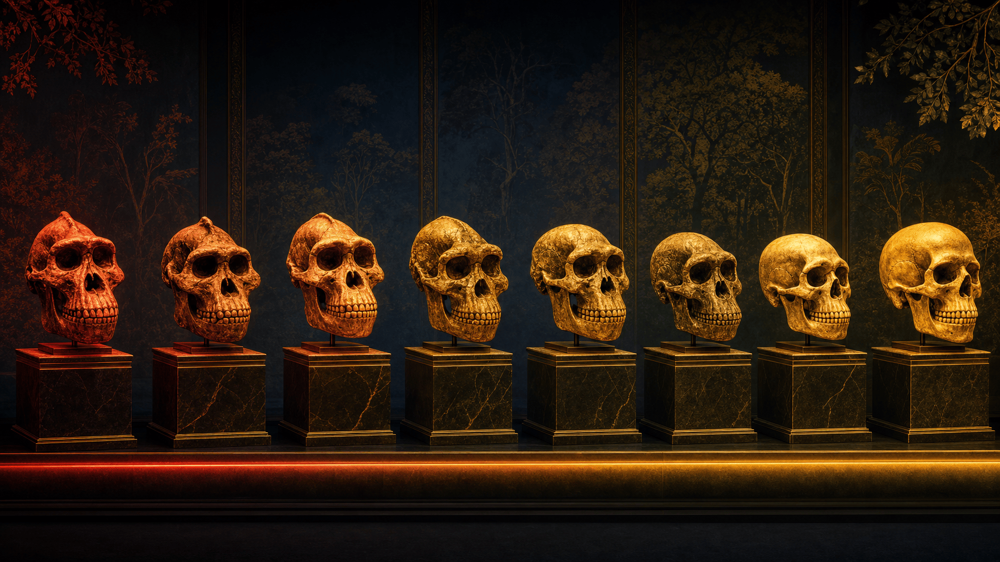
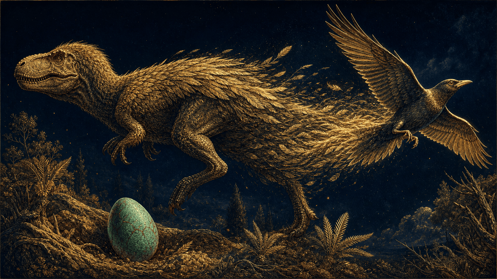
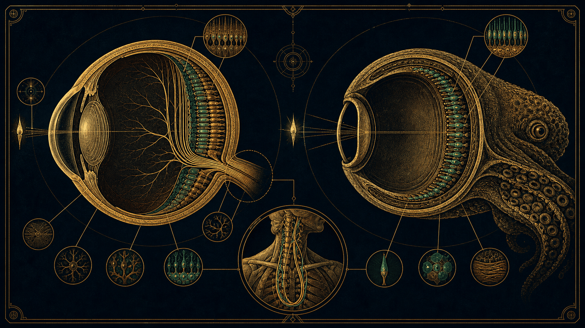

« L'homme descend du singe », « pourquoi y a-t-il encore des singes ? », « le chaînon manquant », « c'est juste une théorie »… On remet les pendules à l'heure : preuves ADN et paléontologiques à l'appui, l'évolution n'est ni une échelle, ni une chaîne, mais un buisson dont nous ne sommes qu'une branche.
« Nous ne sommes pas le point final de la création, mais un magnifique brouillon en perpétuelle réécriture. »
L'évolution n'est pas une échelle, ni une chaîne, mais un buisson.
Ce dossier reprend mot pour mot le déroulé du live d'Ymir & Lalie consacré à l'évolution et à ses idées reçues. On y déconstruit, avec de la biologie, de la génétique et un peu de mauvaise foi envers ceux qui croient l'humain « produit fini » : le piège sémantique de « l'homme descend du singe », le mythe du singe « inachevé », le fantôme du chaînon manquant, la preuve par le mauvais design, les dinosaures qui n'ont pas disparu — et pourquoi la science n'est pas une croyance mais une méthode.
Dévonien · conquête des terres
Des nageoires capables de porter
Tiktaalik n'est pas notre ancêtre direct : ce proche cousin des premiers tétrapodes montre comment des nageoires robustes, un cou mobile et des poumons ont rendu possible la transition entre eau peu profonde et terre ferme.
Objectifs pédagogiques
Comprendre pourquoi nous ne descendons pas du singe : nous en sommes un.
Comprendre
La cladistique et la phylogénie : pourquoi appartenir au clade des grands singes n'est pas une insulte, mais une description technique de notre architecture biologique.
Déconstruire
Les idées reçues : « juste une théorie », « la loi du plus fort », « le chaînon manquant », « les animaux s'adaptent par volonté » — cinq fake news démontées une à une.
Prouver
Par le bricolage : le nerf laryngé, l'œil inversé, les organes vestigiaux. Le « mauvais design » du corps humain est la meilleure preuve que la nature tâtonne, elle ne prévoit pas.
Repères · interactif
De la sortie des eaux à « vous êtes ici »
Cliquez (ou survolez) un repère. Le « maillon manquant » n'est pas un trou : c'est une forêt de formes de transition, chacune à sa place dans le temps profond.
Cinq affirmations, une réponse immédiate et une explication courte. Aucun piège de vocabulaire — seulement de bons réflexes scientifiques.
0bonne réponse
Question 1 sur 5
Ouverture du live
« Arrêtez de raconter n'importe quoi. »
01
L'Évolution, … fin des idées reçues.
Au micro
Salut à toutes et à tous ! On est enfin de retour. Vous nous l'avez demandé, on l'a travaillé, et aujourd'hui, on ne va pas juste 'parler' d'évolution. On va enfin mettre les pendules à l'heure."
Exactement. Parce qu'on a vu passer pas mal de choses sur les lives et sur les réseaux ces derniers temps... Et franchement ça va pas du tout !
Des trucs du genre 'si on descend du singe, pourquoi y'a encore des singes ?' ou encore cette fameuse quête du 'chaînon manquant'...Mais Adam et Eve, c'est eux les premiers !
- On a décidé, avec Ymir et toute l'équipe de L'Empire Contre-Intox, qu'il était temps de déconstruire tout ça. On va vous montrer pourquoi, en réalité, l'évolution n'est pas une échelle, pas une chaîne, mais un buisson incroyablement complexe dont nous sommes juste... une branche parmi d'autres.
Et on va le faire avec du concret. Pas de bla-bla mystique, juste de la biologie, de la génétique et un peu de mauvaise foi envers ceux qui pensent que l'humain est le 'produit fini' de la nature.
Préparez vos questions, sortez vos notes. On attaque direct avec le plus gros malentendu de toute l'histoire de la biologie : notre parenté avec nos cousins primates."
On s'attaque à nouveau donc à un monument : La Théorie De L'Evolution.
Entre mythes tenaces, erreurs linguistiques et raccourcis scientifiques, nous allons remettre les pendules à l'heure. Oubliez l'image de l'homme qui descend du singe : nous allons vous démontrer, preuves ADN et paléontologiques à l'appui, pourquoi nous sommes en réalité des 'cousins' au sein de la grande famille des grands singes. Pas de cours magistral, juste une déconstruction méthodique et sans filtre, dans le pur style de L'Empire Contre-Intox.
Sommaire
Sept parties pour en finir avec les idées reçues.
02
I. Le Piège Sémantique : "L'Homme descend du singe" ?
Le concept de cladistique (le jeu d'emboîtement).
Déconstruction de la linéarité : pourquoi nous sommes des singes, pas des descendants.
II. L'Homme, ce singe qui s'ignore
L'erreur de l'essentialisme vs la réalité de la phylogénie.
L'évolution : un buisson, pas une échelle.
III. Le "Singe" n'a pas évolué ? (Le Grand Malentendu)
Le mythe du singe "inachevé" : le cousin vs l'ancêtre.
Adaptation vs Perfection : le buffet des stratégies de survie.
IV. La "Fake News" Station
"C'est juste une théorie" / "La loi du plus fort".
"L'évolution explique l'origine de la vie" (abiogenèse).
Les erreurs sur l'adaptation par volonté (Lamarckisme).
V. Le Mystère du "Maillon Manquant"
Pourquoi cette expression est obsolète (le concept de dégradé).
L'historique du malentendu (Lyell, Haeckel, Dubois).
Le maillon manquant : un "Bigfoot" biologique.
VI. L'Imperfection : La preuve par le bricolage
Les erreurs de conception du corps humain (Nerf laryngé, œil inversé, accouchement).
Science vs Dogme : Pourquoi le "mauvais design" prouve l'évolution.
VII. Analogie Finale : Le Nouveau Monde
L'objet existe avant le nom (Dinosaures, Australie).
Ouverture : "L'évolution n'est pas une quête de perfection, c'est une leçon de survie."
Réalisé parLalie & Ymir
Partie I · Le piège sémantique
« L'homme descend du singe » ?
L'idée que « l'homme descend du singe » est l'erreur classique qui occulte la compréhension réelle de l'évolution. En sciences, nous ne parlons pas de descendance linéaire (ancêtre → descendant), mais de parenté phylogénétique (ancêtre commun → embranchements).
La taxonomie
Un jeu d'emboîtement.
03

Le vivant est un buisson — l'humain, une brindille parmi les grands singes
1. La taxonomie : Un jeu d'emboîtement
La classification moderne (cladistique) ne définit plus les groupes par ce qu'ils font, mais par ce qu'ils sont (leurs caractères dérivés partagés).
Le concept de clade : Un clade regroupe un ancêtre commun et tous ses descendants.
La place de l'humain : L'humain appartient à la famille des Hominidés. Cette famille inclut les chimpanzés, les gorilles et les orangs-outans.
La logique biologique : Si vous êtes un Hominidé, vous êtes par définition un grand singe. Dire que l'humain « descend » du singe est une erreur, car cela suppose que le singe est une entité figée dont l'humain se serait détaché. En réalité, l'humain est une branche parmi d'autres du groupe des singes.
2. L'ancêtre commun : Le pivot de la réflexion
Pour expliquer pourquoi nous sommes des singes, il faut déconstruire le mythe du « chaînon manquant » linéaire.
La notion de divergence : Il y a environ 6 à 7 millions d'années, une population ancestrale de primates s'est scindée. Un groupe a évolué vers la lignée des Paninés (chimpanzés et bonobos), l'autre vers la lignée des Homininés (humains).
L'erreur du « plus primitif » : Aucun des deux n'est l'ancêtre de l'autre. Le chimpanzé actuel n'est pas « l'ancêtre » de l'humain, il est un cousin qui a évolué de son côté pendant 7 millions d'années, tout comme nous.
3. Les preuves de notre « siméité » (Appartenance au groupe)
Pour convaincre votre audience, appuyez-vous sur des caractères dérivés partagés qui ne laissent aucune place au doute :
Génétique : Nous partageons environ 98,8 % de notre ADN avec les chimpanzés.
Morphologie : La structure de notre squelette, la disposition de nos organes et même notre système immunitaire témoignent de cette origine commune profonde.
Éthologie : Les capacités cognitives, l'utilisation d'outils, les structures sociales complexes et la gestion des émotions observées chez les grands singes sont des reflets de notre propre héritage biologique.
4. Synthèse
Le mot-clé
« Ne cherchez pas un ancêtre qui ressemblerait à un chimpanzé actuel. Cherchez plutôt une population de primates ancestraux dont nous partageons tous les deux l'héritage. L'humain n'est pas un singe qui a "réussi" à sortir du groupe : il est l'un des membres les plus spécialisés, et peut-être le plus surprenant, de la famille des grands singes. »
Sources pour vos recherches complémentaires
Lecointre, G. (2018). La classification phylogénétique du vivant. (Ouvrage de référence pour la taxonomie).
Brunet, M. (2002). Travaux sur Sahelanthropus tchadensis (Toumaï), pour illustrer la divergence des lignées.
Muséum national d'Histoire naturelle. Dossiers pédagogiques sur l'évolution humaine et la phylogénie.
Expérience · changer de modèle mental
Explorez le buisson des grands singes.
Sélectionnez une branche pour comprendre sa divergence, puis affichez la « marche du progrès » et voyez ce que cette image trompeuse fait disparaître.
Schéma pédagogique simplifié · distances non proportionnelles
Point de départ · population ancestrale
Un ancêtre, plusieurs devenirs
Cet ancêtre n'était ni un humain, ni un chimpanzé moderne. Ses populations descendantes se sont séparées, accumulant chacune leurs propres transformations.
À retenir
Une divergence crée des cousins : elle ne transforme pas une espèce actuelle en une autre.
Ancêtre supposé
Singe
Primate debout
Homininé
Humain « final »
Ce dessin raconte une histoire qui n'existe pas. Il gomme les branches, place l'humain au sommet et transforme des cousins contemporains en étapes inachevées. L'évolution produit des divergences, pas une file d'attente vers Homo sapiens.
Explorateur externe · OneZoom
Deux millions d'espèces sur une seule carte.
Zoomez comme dans une carte géographique, suivez les branches et cherchez votre place dans le vivant. Le visualiseur officiel OneZoom est chargé uniquement à votre demande.
Cette expérience interactive est fournie par OneZoom. Son chargement contacte le site onezoom.org et peut déposer ses propres données de session.
Déplacez-vous par glisser-déposer · zoomez avec la molette ou deux doigts.Explorer l'API OneZoom → · Visualisation : OneZoom.
Partie II · L'Homme, ce singe qui s'ignore
Le problème n'est pas biologique, il est linguistique.
Nous sommes héritiers d'une vision essentialiste du monde : celle d'Aristote, qui classait les êtres selon des « essences » fixes. La phylogénie moderne, elle, refuse de considérer qu'un groupe s'arrête là où un autre commence.
La faute épistémologique
« Essentialisme » vs « Phylogénie ».
04
1. La faute épistémologique : Le "Essentialisme" vs "Phylogénie"
Le problème fondamental n'est pas biologique, il est linguistique et philosophique. Nous sommes héritiers d'une vision essentialiste du monde : celle d'Aristote, qui classait les êtres selon des "essences" fixes.
L'erreur : Imaginer que le mot "singe" désigne un groupe figé dont l'humain serait extérieur. C'est ce qu'on appelle une vision anthropocentrée.
La correction : La phylogénie moderne (la science des parentés) refuse de considérer qu'un groupe s'arrête là où un autre commence. Si vous avez un ancêtre commun avec un chimpanzé, alors vous appartenez au même "clade". En biologie, on ne "sort" jamais de son groupe d'origine : on est toujours ce qu'on était.
Exemple : Un mammifère reste un mammifère, même s'il devient une baleine. L'humain reste un singe, même s'il devient bipède et technologique.
2. Le mythe de la linéarité : Le "Grand Échelle des Êtres"
Pourquoi cette image d'un singe qui se redresse est-elle si tenace ? Parce qu'elle flatte notre ego en nous plaçant au sommet d'une hiérarchie.
Le biais : Nous projetons une finalité sur l'évolution (téléologie). On imagine que la nature a "visé" l'humain.
La réalité : L'évolution est un buisson, pas une échelle.
L'épistémologie de terrain : Lorsque nous disons "l'homme descend du singe", nous sous-entendons que le singe actuel est "inachevé" et que nous sommes le produit "fini". C'est une erreur de raisonnement grave : les chimpanzés et nous sommes le résultat de 7 millions d'années d'évolution divergente. Ils sont aussi "évolués" que nous, mais dans une autre direction, parfaitement adaptée à leur niche écologique.
3. La taxonomie comme miroir de notre ignorance
Pour le dire simplement à vos abonnés : Nommer, c'est classer, et classer, c'est trahir.
La classification cladistique : Elle est rigoureuse car elle interdit les groupes "fourre-tout". Si on appelle un groupe "singes" (simiiformes), alors, par définition, nous devons y figurer. Si on nous en exclut, le groupe devient "non-scientifique".
L'argument d'autorité biologique :
Nos mains ont la même structure pentadactyle (cinq doigts) que celles de nos ancêtres primates.
Nos yeux sont orientés vers l'avant (vision stéréoscopique), un héritage de la vie arboricole.
Le fait que nous soyons des singes n'est pas une "insulte" ou une "théorie", c'est une description technique de notre architecture biologique.
4. Synthèse
La posture : Ne pas être dans la confrontation, mais dans la révélation.
La révélation
"Dire que l'homme descend du singe, c'est comme dire qu'un cousin descend de son frère. C'est faux. L'homme, le chimpanzé et le gorille sont tous des frères, des cousins qui partagent le même grand-père primate, disparu il y a des millions d'années. Nous ne sommes pas les descendants d'une espèce de singe, nous sommes une espèce de singe parmi les autres."
5. Pour aller plus loin (L'angle "Empire Contre-Intox")
Le point de réflexion : Pourquoi avons-nous besoin de nous sentir "spéciaux" au point de nier notre parenté biologique ?
La piste : Peut-être parce que nous avons peur de voir que nos comportements sociaux, nos guerres, notre solidarité et notre curiosité sont aussi des héritages profonds de nos racines primatiales. Reconnaître que nous sommes des singes, c'est aussi reconnaître que notre intelligence est une continuité, pas une rupture miraculeuse.
Partie III · Le grand malentendu
Pourquoi le singe n'a pas évolué ?
C'est la question que tout le monde se pose, dans certains lives voir ici maintenant ! C'est le moment idéal pour corriger une énorme idée reçue avec parcimonie et rigueur.
Le singe a autant évolué que nous
Trois arguments chocs.
05

Deux cousins, deux niches — aucun n'est l'ancêtre de l'autre
L'erreur, c'est de croire que l'homme est le "but" de l'évolution et que le singe est une "étape ratée".
En réalité :
Le singe a autant évolué que l'homme, mais dans une direction différente.
Voici les 3 arguments chocs pour répondre aux sceptiques
1. Nous ne descendons pas du chimpanzé
Nous avons un ancêtre commun (qui ne ressemblait ni tout à fait à un homme, ni tout à fait à un chimpanzé).
Il y a environ 7 millions d'années, la lignée s'est séparée en deux.
Une branche a évolué vers la savane (nous).
L'autre branche a continué d'évoluer pour la forêt (les chimpanzés).
2. Le chimpanzé est "parfait" pour son milieu
L'évolution ne cherche pas à créer de l'intelligence, elle cherche à créer de la survie.
Si tu mets un humain nu en pleine jungle face à un chimpanzé, c'est l'humain qui a l'air "moins évolué" : le chimpanzé est 4 fois plus fort que nous, il grimpe avec une agilité incroyable et sait survivre sans outils.
Pour son environnement (la forêt tropicale), le singe est un chef-d'œuvre d'évolution. Il n'avait aucune raison de développer un gros cerveau énergivore pour marcher dans la savane.
3. Ils ont évolué... mais ça ne se voit pas au premier coup d'œil
On croit qu'ils n'ont pas bougé parce qu'ils ont toujours des poils et quatre pattes, mais leur ADN a changé autant que le nôtre :
Leur système immunitaire a évolué pour combattre des virus tropicaux.
Leur dentition s'est adaptée à leur régime.
Leurs pieds sont restés des "mains" parce que c'est un avantage vital pour eux, alors que pour nous, c'était devenu un handicap pour marcher droit.
La punchline
"Dire que le singe n'a pas évolué parce qu'il n'est pas devenu humain, c'est comme dire que le voilier est un échec parce qu'il n'est pas devenu un avion. Les deux servent à voyager, mais pas sur le même terrain."
Nous avons une petite histoire à vous conter.
« Le Cousin et le Millionnaire »
L'histoire
"Si quelqu'un dit : 'Si l'homme descend du singe, pourquoi y a-t-il encore des singes ?', posez-lui cette question :
'Si tu descends de tes grands-parents, pourquoi as-tu encore des cousins ?'
C'est exactement la même chose. Tes cousins n'ont pas 'échoué' à devenir toi. Vous avez simplement pris des chemins différents après vos grands-parents. Le singe, c'est ton cousin éloigné. Il n'est pas ton ancêtre, il est ton contemporain.
L'évolution, ce n'est pas une course où l'humain est la ligne d'arrivée. C'est un buffet à volonté : nous on a pris l'option 'Gros Cerveau et Mal de Dos', et le chimpanzé a pris l'option 'Muscles d'Acier et Vie en Forêt'. Chacun sa stratégie, et pour l'instant, les deux fonctionnent !"
Fiche Mémo (Les 3 points clés)
Retenir juste ces 3 mots :
COUSINS, PAS PARENTS : On partage un ancêtre, on ne descend pas d'eux.
ADAPTATION : Le singe est le roi de la jungle, l'humain est le roi de l'outil. Chacun son domaine.
PAS DE BUT : L'évolution ne cherche pas à fabriquer des humains, elle cherche à fabriquer des survivants.
Le mot de la fin
"Au final, la question n'est pas de savoir pourquoi le singe n'est pas devenu humain, mais plutôt : serons-nous encore là dans un million d'années pour voir ce que le singe est devenu ? Car lui aussi, il continue d'évoluer en ce moment même !"
Simulation · sélection naturelle
Changez le climat, pas les individus.
Une population imaginaire possède trois épaisseurs de pelage. Faites varier la température et avancez dans les générations : observez comment leur fréquence relative évolue sans qu'aucun individu ne « décide » de s'adapter.
Environnement Tempéré
12 °C
FroidTempéréChaud
Modèle pédagogique volontairement simplifié : dans la nature interviennent aussi mutations, dérive génétique, migrations, compétition et bien d'autres facteurs.
Pelage court
33 %
Pelage moyen
34 %
Pelage long
33 %
Équilibre relatif
Dans ce climat tempéré, aucun pelage n'a encore un avantage écrasant. Avancez dans le temps ou changez la température pour exercer une pression de sélection.
Partie IV · La « Fake News » Station
Cinq idées reçues, cinq réponses.
« L'évolution n'est pas une quête de perfection, c'est une leçon de survie : on ne devient pas le meilleur, on devient simplement celui qui reste. »
Les Fakes News
L'idée reçue contre la réalité.
06
Fake News n°1 : "C'est juste une théorie"
L'idée reçue : "Si c'est une théorie, c'est que les scientifiques ne sont pas sûrs, c'est comme une opinion."
La réalité : En science, une Théorie est le niveau de certitude le plus élevé. C'est un ensemble de preuves vérifiées qui expliquent des faits. On parle de la théorie de la gravitation (pourtant, personne ne doute que si tu lâches ton téléphone, il tombe) ou de la théorie des germes. L'évolution est un fait observé
Fake News n°2 : "L'évolution, c'est la loi du plus fort"
L'idée reçue : "Seuls les plus costauds survivent (Darwinisme social)."
La réalité : Darwin n'a jamais dit ça. Il parlait du plus apte (survival of the fittest), c'est-à-dire celui qui est le mieux adapté à son environnement. Parfois, être petit, discret ou solitaire est un bien meilleur avantage que d'être fort et agressif.
Fake News n°3 : "L'évolution explique l'origine de la vie"
L'idée reçue : "L'évolution explique comment la première cellule est apparue à partir de rien."
La réalité : Non. L'évolution explique comment la vie change et se diversifie une fois qu'elle existe déjà. L'étude de l'origine de la vie s'appelle l'abiogenèse. Ce sont deux domaines différents !
Fake News n°4 : "Il manque le 'maillon manquant'"
L'idée reçue : "On n'a jamais trouvé le fossile qui fait le pont entre le singe et l'homme."
La réalité : Cette expression est périmée. On a trouvé des dizaines de formes intermédiaires (Toumaï, Lucy, Homo Habilis...). L'évolution n'est pas une chaîne avec un maillon manquant, c'est un arbre immense. On trouve chaque année de nouvelles "branches".
Fake News n°5 : "Les animaux s'adaptent par volonté"
L'idée reçue : "La girafe a voulu manger des feuilles hautes, donc son cou a grandi."
La réalité : C'est du "Lamarckisme" (une vieille erreur). Un individu ne change pas parce qu'il le veut. C'est juste que les girafes nées avec un cou légèrement plus long ont mieux survécu et ont eu plus de bébés. L'évolution ne choisit rien, elle trie ce qui marche déjà.
La leçon
« L'évolution n'est pas une quête de perfection, c'est une leçon de survie : on ne devient pas le meilleur, on devient simplement celui qui reste. »
Partie V · Le chaînon manquant ou Missing Link
Le « Missing Link », ce Bigfoot de la biologie.
Le concept du "Missing Link" (le maillon manquant) est l'une des expressions les plus célèbres, mais aussi l'une des plus mal comprises de la biologie, car il permet de démonter une idée reçue majeure.
Le concept de dégradé
On ne cherche pas un maillon, mais un dégradé.
07

Non un maillon, mais un dégradé — une forêt entière de fossiles
1. Pourquoi cette expression est fausse ?
L'idée de "maillon" suggère une chaîne. On imagine une chaîne en métal où il manquerait une pièce entre le singe et l'homme.
La réalité : L'évolution n'est pas une chaîne, c'est un arbre.
On ne cherche pas un "maillon", on cherche le dernier ancêtre commun (qu'on appelle le DAC). C'est le point où une branche s'est séparée en deux.
2. Le "Maillon" n'existe pas, car tout est transition
Dire qu'il manque un maillon, c'est comme regarder une photo de vous à 5 ans et une nouvelle photo de vous à 20 ans et dire : "Où est le maillon manquant entre les deux ?".
En réalité, chaque jour de votre vie a été une transition invisible. Pour l'évolution, c'est pareil : chaque fossile est une forme intermédiaire entre ce qui l'a précédé et ce qui l'a suivi.
3. Les découvertes qui ont "rempli" le vide
Pendant longtemps, on n'avait rien entre les grands singes et l'humain. Mais aujourd'hui, on a tellement de fossiles que le "vide" a disparu. On a découvert :
Lucy (Australopithèque) : Elle marchait debout mais avait un petit cerveau.
Toumaï (Sahelanthropus) : Proche de la séparation entre nous et les chimpanzés (environ 7 millions d'années).
Homo Habilis : Le premier à utiliser des outils de pierre de manière systématique.(à vérifier).
4. L'anecdote choc
L'anecdote choc
"On cherche souvent un squelette mi-homme mi-singe, comme une créature de film. Mais en réalité, le 'maillon manquant', c'est un peu comme la couleur orange entre le rouge et le jaune. Où s'arrête le rouge ? Où commence l'orange ? C'est un dégradé. Nous avons trouvé tellement de fossiles ces 20 dernières années que le 'maillon manquant' n'est plus un trou, c'est devenu une forêt entière de découvertes."
L'expression "Missing Link" n'a pas été inventée par un scientifique pour valider l'évolution, mais elle est devenue populaire suite à une sorte de malentendu médiatique et scientifique au 19ème siècle.
Voici les noms clés à retenir pour le live :
1. Charles Lyell (Le premier à l'utiliser)
C'est un géologue célèbre et ami de Darwin. En 1863, dans son livre Antiquity of Man, il utilise l'expression pour parler du fossile qui ferait le pont entre les grands singes et l'humain. À l'époque, on n'avait presque aucun fossile humain ancien, donc le "vide" était immense.
2. Ernst Haeckel (Le vulgarisateur)
Ce biologiste allemand a vraiment "vendu" l'idée au grand public. Il était tellement convaincu qu'il existait une créature intermédiaire qu'il l'a même nommée avant de la trouver : il l'a appelée le Pithecanthropus alalus (l'homme-singe sans parole).
3. Eugène Dubois (Celui qui pensait l'avoir trouvé)
Inspiré par Haeckel, ce médecin néerlandais est parti en Indonésie exprès pour chercher ce fameux maillon. En 1891, il découvre des ossements qu'il nomme "L'Homme de Java". Il proclame alors au monde entier : "J'ai trouvé le maillon manquant !". Aujourd'hui, on sait qu'il s'agissait de l'Homo erectus.
⚠️ Pourquoi c'est devenu un "piège" ?
Les journalistes de l'époque ont adoré l'expression parce qu'elle était simple et spectaculaire. Mais pour Charles Darwin, c'était un terme dangereux.
L'avis de Darwin : Dans L'Origine des Espèces, Darwin explique que les archives fossiles sont comme un livre dont on aurait arraché 99 % des pages. Il ne cherchait pas un "maillon" unique, mais il expliquait que la transition était lente et continue. Pour lui, le "maillon" était une illusion d'optique due au fait qu'on n'avait pas encore trouvé tous les fossiles.
La minute "Punchline"
L'expression 'Maillon manquant' a été inventée par des gens qui cherchaient une réponse simple à un puzzle complexe. Aujourd'hui, les scientifiques détestent ce mot, car on a réalisé que l'évolution n'est pas une chaîne avec une pièce manquante, mais un dégradé infini. Le maillon manquant, c'est un peu le 'Bigfoot' de la biologie : tout le monde en parle, mais personne ne l'a trouvé car il n'a jamais existé sous cette forme !
Les Sources Fondatrices (Historiques)
Charles Darwin, L'Origine des espèces (1859) : La base de la sélection naturelle.
Charles Darwin, La Filiation de l'homme (1871) : Là où il applique sa théorie à l'être humain.
Charles Lyell, The Geological Evidences of the Antiquity of Man (1863) : La première mention du fameux "Missing Link".
Les Sources Scientifiques Modernes (Biologie & Évolution)
Richard Dawkins, Le Gène égoïste (1976) : Pour comprendre comment l'évolution se passe au niveau des gènes et non des individus.
Stephen Jay Gould, La Vie est belle : Un livre génial pour expliquer que l'évolution est un buisson plein de hasard et non une ligne droite vers la perfection.
Neil Shubin, Au commencement était le poisson (Your Inner Fish) : C'est la source parfaite pour les organes inutiles. Il explique comment notre corps garde les traces de nos ancêtres poissons.
Sources Anthropologiques (L'Humain)
Pascal Picq, Au commencement était l'homme : L'un des plus grands paléoanthropologues français. Il explique très bien pourquoi l'homme ne descend pas du singe mais est un "cousin".
Yuval Noah Harari, Sapiens : Une brève histoire de l'humanité : Idéal pour la partie sur l'évolution culturelle et le futur (l'homme augmenté).
Sites & Revues de référence (Pour vérifier des faits en direct)
CNRS (Le journal) : Dossiers très complets sur l'évolution humaine.
Hominides.com : Le site de référence en français pour suivre les découvertes de fossiles (Toumaï, Lucy, etc.).
Nature / Science : Les revues où sont publiées toutes les grandes découvertes mondiales (comme la résistance des bactéries).
Petit conseil "Crédibilité"
Si quelqu'un demande les sources, on peut vous répondre :
On s'appuie sur le consensus scientifique actuel, notamment les travaux de paléoanthropologues comme Pascal Picq et les découvertes génétiques publiées dans les revues Nature et Science.
Ça calme tout de suite les sceptiques !
4 chiffres & faits chocs
Le test de paternité des espèces.
08
Voici 4 chiffres et faits chocs incontestables, avec les données précises et illustrer de nos propos durant le live :
Génome · interactif
Le test de paternité, à l'échelle des espèces
Cliquez une barre. Attention à ce que mesure chaque chiffre : de l'ADN aligné pour le chimpanzé, mais des gènes homologues pour la banane.
Le chiffre : Nous partageons environ 98,8 % de notre ADN avec les chimpanzés et les bonobos.
L'argument choc : "Si vous faisiez un test de paternité à l'échelle des espèces, le résultat serait sans appel : nous sommes génétiquement presque identiques. Ce qui fait de nous des humains, c'est ce minuscule 1,2 % de différence qui a suffi à nous donner le langage et la technologie."
2. Le voyageur du temps : 375 millions d'années ?
Le fait : Vous avez des gènes de poisson. L'ancêtre commun que nous partageons avec les poissons s'appelle le Tiktaalik.
L'argument choc : "Regardez votre cou. Les poissons n'en ont pas. Mais nous avons gardé les nerfs et les muscles qui servaient autrefois à faire bouger les branchies. Aujourd'hui, ces mêmes muscles nous servent à avaler et à parler. On n'a pas inventé de nouvelles pièces, on a juste recyclé celles d'un poisson vieux de 375 millions d'années."
3. La vitesse de l'évolution : 20 minutes ?
Le chiffre : Une bactérie comme E. coli se reproduit toutes les 20 minutes.
L'argument choc : "On croit que l'évolution prend des millions d'années. C'est vrai pour les éléphants, mais pour les bactéries, ça va à la vitesse de l'éclair. En une seule journée, une bactérie peut vivre 72 générations. C'est pour ça qu'elles évoluent si vite pour résister à nos antibiotiques : en 24h, elles ont fait l'équivalent de 2 000 ans d'évolution humaine !"
4. Le "cimetière" génétique : 99 %
Le chiffre : 99 % de toutes les espèces qui ont un jour vécu sur Terre ont disparu.
L'argument choc : "L'évolution n'est pas une machine à créer des gagnants, c'est un cimetière géant. Sur 100 tentatives de la nature, 99 finissent par une extinction. Nous ne sommes pas les 'élus', nous sommes juste les rescapés d'une loterie ultra-violente qui dure depuis 4 milliards d'années."
Le petit "plus"
Humain vs Chimpanzé : 98,8 % d'ADN commun.
Humain vs Banane : 60 % d'ADN commun (oui, vous avez la moitié de vos instructions génétiques identiques à celles d'un fruit, ce qui fait toujours rire le chat !).
Pour répondre à n'importe quel "sceptique", voici les sources classées par type.
Les livres de référence (La base scientifique)
Neil Shubin, Au commencement était le poisson (2008) : C'est LA source pour tes exemples sur les organes inutiles et les structures héritées des poissons (le hoquet, les nerfs du cou).
Richard Dawkins, Le plus grand spectacle du monde (2009) : Un livre entièrement dédié aux preuves irréfutables de l'évolution (fossiles, ADN, sélection artificielle).
Stephen Jay Gould, La vie est belle (1989) : La source idéale pour expliquer que l'évolution est un buisson (l'arbre) et non une échelle vers la perfection.
Alice Roberts, The Incredible Unlikeliness of Being (2014) : Une anatomiste qui explique comment chaque partie de notre corps est un vestige de notre passé évolutif.
Les sources génétiques (Les chiffres)
The Chimpanzee Sequencing and Analysis Consortium (Nature, 2005) : C'est l'étude historique qui a prouvé les 98,8% d'ADN commun entre l'homme et le chimpanzé.
National Human Genome Research Institute (NIH) : Leurs bases de données publiques confirment les partages d'ADN entre les espèces (même les 50% avec la banane !).
Les sources paléontologiques (Les fossiles)
Hominides.com : Le site francophone le plus complet et à jour sur les découvertes de fossiles. Idéal pour vérifier les dates de Lucy ou de Toumaï.
Journal of Human Evolution : La revue scientifique où sont publiés les détails techniques sur les nouveaux "maillons" découverts.
Comment citer les sources en direct ? Petits conseils.
Pour l'anatomie : "Je me base sur les travaux de l'anatomiste Neil Shubin sur les vestiges évolutifs dans le corps humain."
Pour les fossiles : "Ce sont les datations publiées par les équipes du CNRS et de la revue Nature sur les fossiles d'Australopithèques."
Pour la génétique : "C'est le séquençage complet du génome humain et du chimpanzé terminé au début des années 2000."
Petit lexique pour faire "Expert" (3 mots clés)
Phénotype : Ce qu'on voit (ton corps, tes poils).
Génotype : Ce qui est écrit dans ton ADN.
Sélection Sexuelle : Quand l'évolution choisit ce qui est "beau" ou attirant, même si c'est inutile (ex: la queue du paon).
Le moment interactif
D'après vous, quel critère fait qu'on est humain ?
Le fait de marcher debout ? De parler ? Ou de fabriquer des outils ?
(Cela permettra d'expliquer que ces critères ne sont pas apparus d'un coup, mais petit à petit sur des millions d'années).
Partie VI · Point Analogie
L'objet existe avant le nom.
Les dinosaures existaient bien avant qu'on ne leur donne un nom en 1841. L'analogie du « Nouveau Monde » : ce n'est pas parce qu'on invente un mot que la chose n'existait pas avant.
La preuve par la logique
Le Nouveau Monde & les dinosaures.
09

Les oiseaux ne descendent pas des dinosaures — ils sont des dinosaures
1. L'analogie du Nouveau Monde (La preuve par la logique)
L'argument : "On n'a inventé le mot 'Australie' qu'au 19ème siècle. Est-ce que ça veut dire que l'Australie n'existait pas avant ?"
L'explication : L'Amérique existait avant que Christophe Colomb ne l'appelle ainsi. Les dinosaures existaient, mais les humains n'avaient simplement pas encore de mot pour désigner ce groupe spécifique d'animaux.
2. On les trouvait déjà, mais on les appelait autrement
Avant que le mot "Dinosaure" ne soit inventé en 1841 par Richard Owen, les gens trouvaient déjà des os géants, mais ils les interprétaient avec les connaissances de leur époque :
En Chine : On pensait que c'étaient des os de Dragons.
En Europe (Moyen Âge) : On pensait que c'étaient des restes de Géants bibliques ou de créatures mortes pendant le Déluge.
En 1676 : Robert Plot a décrit un fémur de Mégalosaure, mais il pensait que c'était l'os d'un éléphant de guerre romain ou d'un humain géant.
3. Pourquoi le nom "Dinosaure" est apparu tard ?
C'est la naissance de la paléontologie en tant que science.
Avant le 19ème siècle, on n'avait pas les outils pour comprendre que la Terre avait des millions d'années.
Richard Owen a créé le mot (Dinos = terrible, Sauros = lézard) parce qu'il a réalisé que ces os appartenaient à une famille d'animaux totalement différente des reptiles actuels. Ce n'est pas une "invention", c'est une classification.
4. Les preuves irréfutables (Au-delà du nom)
La chimie des fossiles : On peut dater les roches dans lesquelles on trouve les os grâce à la radioactivité. Ces roches ont des millions d'années, peu importe le nom qu'on leur donne.
Les empreintes : On ne trouve pas que des os, mais aussi des empreintes de pas, des œufs fossilisés et même des restes de peau.
La continuité : On a des fossiles de transition (comme l'Archaeopteryx) qui montrent le passage du dinosaure à l'oiseau. Si les dinosaures étaient une invention du 19ème siècle, comment expliquer que les oiseaux (leurs descendants) partagent leur structure osseuse ?
La "Punchline"
"Dire que les dinosaures n'existaient pas parce qu'on a inventé le mot en 1841, c'est comme dire que la gravité n'existait pas avant que Newton ne lui donne un nom en 1687. Les pommes tombaient déjà sur la tête des gens, on ne savait juste pas comment appeler la force qui les attirait !"
Voici une liste structurée des sources que l'on peut citer. Elles couvrent l'histoire, la biologie et les découvertes de fossiles.
Les Sources Historiques (L'origine des noms et concepts)
Charles Lyell, The Geological Evidences of the Antiquity of Man (1863) : La première source majeure mentionnant le "Missing Link".
Richard Owen, Report on British Fossil Reptiles (1841) : La publication scientifique où le mot "Dinosauria" est officiellement créé pour regrouper les fossiles découverts.
Robert Plot, The Natural History of Oxfordshire (1677) : La première trace écrite d'un os de dinosaure (un fémur), même s'il pensait à l'époque que c'était un géant.
Les Sources Scientifiques (Les preuves physiques)
The Chimpanzee Sequencing and Analysis Consortium (Revue Nature, 2005) : L'étude génétique de référence qui prouve les 98,8% d'ADN commun entre l'homme et le chimpanzé.
Neil Shubin, Your Inner Fish (2008) : Un livre (et documentaire) indispensable pour expliquer comment nos organes actuels sont des héritages de poissons préhistoriques (les organes inutiles).
Michel Brunet et al. (Revue Nature, 2002) : La publication officielle sur la découverte de Toumaï, notre plus vieil ancêtre connu (7 millions d'années).
Sources de Fact-Checking (Pour vérifier en direct)
CNRS (Le Journal) : Pour les dossiers vulgarisés mais très rigoureux sur l'évolution humaine.
Hominides.com : Le site francophone le plus complet pour l'histoire de la lignée humaine (Lucy, Néandertal, etc.).
Understanding Evolution (UC Berkeley) : Une base de données mondiale pour démonter les fake news sur l'évolution.
Comment présenter ces sources au chat
Si on nous accuse de "tout inventer", vous êtes invitez à nous rejoindre pour échanger.
Sur les dinosaures : "Le mot a été inventé en 1841 par Richard Owen, mais on trouve des descriptions d'ossements dès 1677 par Robert Plot. L'objet préexiste toujours au nom qu'on lui donne."
Sur l'homme et le singe : "L'idée que nous sommes cousins est prouvée par la génétique moderne. La revue Nature a publié le séquençage complet du génome du chimpanzé en 2005, confirmant notre proximité."
Sur les fossiles : "L'évolution n'est pas une supposition, c'est une observation basée sur des milliers de fossiles datés par radioactivité dans des revues à comité de lecture comme Science ou Nature."
« Saviez-vous que ? »
Cinq faits qui changent tout sur les dinosaures.
10
1. Ils n'ont pas (tous) disparu ? ➡️
Le fait : Les oiseaux ne sont pas les "descendants" des dinosaures, ce sont des dinosaures.
L'argument choc : "Quand vous mangez un poulet rôti, vous mangez techniquement un dinosaure théropode. Ils ont simplement survécu en devenant plus petits et en développant des plumes."
2. Le T-Rex junevile avait (probablement) des plumes
Le fait : On a trouvé des traces de duvet ou de plumes sur de nombreux cousins du T-Rex (comme le Yutyrannus).
L'argument choc : "Oubliez le monstre à la peau de lézard de Jurassic Park. Le T-Rex ressemblait sans doute plus à un oiseau géant et terrifiant avec quelques plumes sur le haut du corps. L'évolution l'avait équipé pour réguler sa température."
3. Le "trou temporel" géant
Le fait : Il y a plus de temps entre le Stégosaure et le T-Rex qu'entre le T-Rex et nous.
L'argument choc : "On a tendance à mettre tous les dinosaures dans le même sac. Mais le Stégosaure était déjà un fossile depuis 80 millions d'années quand le T-Rex est apparu ! Ils ne se sont jamais croisés."
4. Les dinosaures "momies"
Le fait : On a retrouvé des dinosaures si bien conservés qu'on a encore leur peau, leurs écailles et même le contenu de leur dernier repas (comme le Borealopelta).
L'argument choc : "On n'a pas besoin de 'croire' en eux ou d'imaginer leur apparence. On a littéralement des momies de dinosaures où l'on peut toucher leur peau fossilisée. Ce n'est pas de la science-fiction, c'est de l'archive géologique."
5. La couleur de leurs œufs
Le fait : Des études récentes ont montré que les dinosaures pondaient des œufs colorés et tachetés (bleus, verts, marrons), exactement comme les oiseaux modernes.
L'argument choc : "L'évolution des couleurs de camouflage sur les œufs de nos oiseaux actuels a commencé il y a plus de 100 millions d'années chez les dinosaures."
Petit conseil "Rappel des Sources" pour ces faits
Si on demande comment on sait tout ça :
Plumes : Les découvertes incroyables dans la province du Liaoning en Chine (revue Nature).
Temps : La stratigraphie et la datation radiométrique des couches géologiques.
Momies : Le spécimen du Royal Tyrrell Museum au Canada.
Sources
Sur l'anatomie et les "organes inutiles"
Source : Neil Shubin, Your Inner Fish: A Journey into the 3.5-Billion-Year History of the Human Body (2008).
Pourquoi l'utiliser : Shubin est paléontologue et professeur d'anatomie. Il explique avec précision comment les nerfs de notre cou et le hoquet viennent directement de nos ancêtres poissons.
Référence académique : Shubin, N. (2008). Your Inner Fish. Pantheon.
2. Sur l'ADN commun (98,8%)
Source : The Chimpanzee Sequencing and Analysis Consortium, Revue Nature (2005).
Pourquoi l'utiliser : C'est l'étude historique qui a séquencé le génome du chimpanzé pour le comparer à l'humain.
Référence académique : "Initial sequence of the chimpanzee genome and comparison with the human genome", Nature 437, 69–87 (2005).
3. Sur les dinosaures et l'origine du nom
Source : Richard Owen, Report on British Fossil Reptiles (1841). Pourquoi l'utiliser : C'est la source primaire où Owen forge le mot "Dinosauria".
Source : Robert Plot, The Natural History of Oxfordshire (1677). Pourquoi l'utiliser : Pour prouver que l'on trouvait des os (le fémur de Mégalosaure) bien avant de savoir ce que c'était.
4. Sur le "Chaînon Manquant" et l'évolution humaine
Source : Charles Lyell, The Geological Evidences of the Antiquity of Man (1863). Pourquoi l'utiliser : Pour l'origine historique du terme.
Source : Pascal Picq, Au commencement était l'homme (Odile Jacob). Pourquoi l'utiliser : C'est la référence francophone pour expliquer la différence entre "descendre de" et "être cousin".
5. Sur les fossiles de transition (Dinosaures vers Oiseaux)
Source : Xing Xu et al., Revue Nature ou Science. Pourquoi l'utiliser : Les découvertes de dinosaures à plumes dans la province du Liaoning (Chine) depuis les années 1990. Référence académique : Xu, X., et al. (2010). "Exceptional fossils demonstrate the existence of feathered dinosaurs".
Petit conseil "Masterclass"
Si quelqu'un demande les sources en plein live, ne pas citer tout. Dire simplement :
"Nous nous appuyons sur le consensus scientifique actuel, notamment les travaux de Neil Shubin sur l'anatomie humaine et les données génomiques publiées dans la revue Nature en 2005 qui confirment notre parenté avec les grands singes."
Partie VI · L'imperfection, preuve par le bricolage
Le « mauvais design » prouve l'évolution.
C'est le débat classique entre Science et Croyance (souvent appelé le Créationnisme). L'objectif n'est pas d'insulter la foi de quelqu'un, mais de montrer pourquoi l'évolution est une explication scientifique autonome qui n'a pas besoin d'une intervention divine pour fonctionner.
Axes Argumentaires
Quatre axes pour répondre avec calme et logique.
11
Voici les 4 axes d'argumentation pour répondre avec calme et logique :
1. L'argument de l'Imperfection (Le "Mauvais Design")
Si un Dieu ingénieur avait tout créé, pourquoi aurait-il fait des erreurs aussi grossières ?
L'exemple du nerf laryngé : Chez la girafe, le nerf qui va du cerveau au larynx descend jusqu'au cœur avant de remonter tout le cou. C'est un détour inutile de plusieurs mètres.
L'argument : "Un créateur intelligent aurait fait un trajet direct de quelques centimètres. L'évolution, elle, fait avec ce qu'elle a : elle a dû bricoler à partir du plan d'un poisson. L'imperfection est la preuve que la nature tâtonne, elle ne prévoit pas."
2. Le Hasard n'est pas le chaos
Les croyants disent souvent : "C'est trop complexe pour être arrivé par hasard (l'analogie de la montre et de l'horloger)."
La réponse : L'évolution n'est pas que du hasard. Les mutations sont aléatoires, mais la sélection naturelle est un filtre ultra-strict.
L'analogie : "Si vous jetez des milliers de dés et que vous ne gardez que les '6', au bout de quelques lancers, vous n'aurez que des 6. Ce n'est pas un miracle, c'est un mécanisme de tri. La vie fait pareil : elle garde ce qui marche et élimine le reste."
3. La preuve par les Fossiles de Transition
Un créateur ferait apparaître des espèces finies et parfaites d'un coup.
Le fait : On voit dans les couches géologiques des transformations lentes. On voit les baleines perdre leurs pattes sur des millions d'années.
L'argument : "Pourquoi un Dieu créerait-il des milliers d'espèces intermédiaires qui finissent toutes par s'éteindre ? Pourquoi créer des dinosaures pour les supprimer et mettre des humains à la place ? L'évolution explique cela par l'adaptation au changement climatique, pas par un plan mystérieux."
4. Science vs Dogme (La méthode)
C'est l'argument le plus puissant sur le plan intellectuel.
L'explication : La science change d'avis quand elle trouve de nouvelles preuves. La croyance part d'une conclusion (Dieu a créé) et essaie d'ajuster les faits autour.
L'argument : "La théorie de l'évolution est falsifiable : si on trouvait demain un fossile de lapin dans une couche de l'ère des dinosaures, toute la théorie s'effondrerait. À l'inverse, rien ne peut prouver ou nier l'existence d'un Dieu, ce qui en fait une question de foi personnelle, pas une explication biologique."
La "Punchline"
"Dire que la complexité de l'œil prouve l'existence d'un créateur, c'est ignorer les millions d'années où la nature a testé des taches de pigments sensibles à la lumière, puis des cupules, puis des lentilles floues. L'évolution n'est pas un saut dans le vide, c'est un escalier dont chaque marche a pris des millions d'années."
"La science explique le 'Comment', la religion essaie d'expliquer le 'Pourquoi'. On peut avoir la foi, mais en biologie, on n'a pas besoin de l'hypothèse divine pour expliquer comment une bactérie devient résistante ou comment l'humain a perdu sa queue."
Erreurs de conception
Le corps humain, ce patchwork bricolé.
12

Deux yeux, deux câblages : le « mauvais design » raconte l'histoire du bricolage
1. Le nerf laryngé récurrent (Le plus célèbre)
L'erreur : Ce nerf relie le cerveau au larynx (la gorge). Au lieu d'y aller directement (un trajet de quelques centimètres), il descend dans la poitrine, s'enroule autour de l'aorte (près du cœur) et remonte vers la gorge.
Pourquoi ? Chez nos ancêtres poissons, le cœur était proche de la gorge. Avec l'évolution du cou, le nerf s'est retrouvé "coincé" derrière l'artère et s'est étiré au fil des millénaires.
L'argument : "Pourquoi un créateur ferait-il faire un détour de 5 mètres à un nerf chez la girafe pour parcourir une distance que 5 cm auraient suffi à combler ?"
2. L'œil inversé (Une erreur de câblage)
L'erreur : Nos cellules photoréceptrices (celles qui captent la lumière) sont orientées vers l'arrière de l'œil, et les câbles (nerfs) passent devant elles. Cela crée deux problèmes : la lumière doit traverser les nerfs avant d'être captée, et le regroupement des nerfs crée un point aveugle là où ils sortent de l'œil.
Pourquoi ? L'évolution a "improvisé" à partir de tissus embryonnaires qui se sont repliés de cette façon. Notez que le poulpe, lui, a un œil "mieux câblé" avec les nerfs derrière les capteurs.
L'argument : "Pourquoi donner un œil mieux conçu à un poulpe qu'à l'être humain si nous sommes le sommet de la création ?"
3. Le bassin étroit et l'accouchement
L'erreur : À cause de la bipédie (marcher debout), le bassin humain s'est rétréci. En parallèle, notre cerveau a grossi. Résultat : l'accouchement humain est le plus dangereux et douloureux de tout le règne animal.
L'argument : "Un design intelligent aurait prévu un passage plus large ou un mode de naissance moins risqué. C'est le résultat d'un compromis brutal entre marcher debout et être intelligent."
4. Le croisement des voies respiratoires et digestives
L'erreur : Nous mangeons et respirons par le même conduit (le pharynx). Un petit clapet (l'épiglotte) essaie de trier, mais des milliers de personnes meurent étouffées chaque année en avalant de travers.
L'argument : "Séparer totalement la trachée de l'œsophage aurait été une solution simple et vitale. L'évolution ne l'a pas fait car elle a recyclé une structure de poisson où les deux étaient liés."
Les Sources pour appuyer ces points
Nathan Lents, Not So Different: Finding Human Nature in Animals (et son livre Human Errors). C'est l'expert mondial des failles du corps humain.
Richard Dawkins, Le plus grand spectacle du monde. Il y consacre un chapitre entier sur l'imperfection des organes.
Alice Roberts, The Incredible Unlikeliness of Being. Elle détaille comment notre anatomie est un "patchwork" historique.
La Punchline de conclusion
"Si le corps humain est l'œuvre d'un ingénieur divin, alors cet ingénieur mérite d'être licencié pour faute grave. Mais si le corps humain est le résultat d'une survie acharnée sur des millions d'années, alors c'est un miracle d'adaptation."
L'attaque, la défense, l'argument massue.
L'Attaque (Le Mythe)
La Défense (La Réalité Scientifique)
L'Argument Massue (La Punchline)
"L'évolution n'est qu'une théorie, pas une preuve."
En science, une "théorie" est un fait prouvé (ex: la gravité). Ce n'est pas une simple supposition.
"On ne dit pas que la gravité est 'juste une théorie' quand on saute d'un avion, on met un parachute."
"L'œil est trop complexe pour être arrivé par hasard."
L'œil n'est pas apparu d'un coup. On a des fossiles et des animaux vivants montrant toutes les étapes, de la tache sensible à la lumière jusqu'à l'œil complexe.
"L'évolution n'est pas un saut, c'est un escalier de millions de marches."
"Si on descend du singe, pourquoi y en a-t-il encore ?"
On ne descend pas du singe actuel, on est ses cousins. Nous partageons un ancêtre commun.
"Si tu descends de tes grands-parents, pourquoi as-tu encore des cousins ?"
"Où est le maillon manquant ?"
Il n'y a pas un "maillon", mais des milliers de fossiles de transition (Lucy, Toumaï, etc.).
"Le maillon manquant, c'est comme chercher la photo exacte où un bébé devient un adulte : ça n'existe pas, c'est un dégradé."
"La vie est trop parfaite pour être un accident."
Le corps humain est rempli d'erreurs (nerf du cou, point aveugle de l'œil, mal de dos).
"Si nous avions un créateur, il aurait de sérieux comptes à rendre au service après-vente !"
Rappel des Sources "Blindées"
Génétique : The Chimpanzee Sequencing and Analysis Consortium (Nature, 2005) -> Preuve des 98,8% d'ADN commun.
Anatomie : Neil Shubin, "Your Inner Fish" -> Preuve que notre corps est un bricolage de poisson.
Fossiles : Hominides.com ou les publications du CNRS -> Preuves des formes de transition.
Erreurs de design : Nathan Lents, "Human Errors" -> Liste des défauts de conception du corps humain.
La conclusion
"La science n'est pas une question de croyance. Elle ne cherche pas à savoir si Dieu existe ou non, elle cherche à comprendre comment la nature fonctionne. Et tout ce que nous observons, de l'ADN aux fossiles, nous raconte la même histoire : celle d'une vie qui s'adapte sans cesse depuis 4 milliards d'années."
L'œil · la plus belle démonstration
L'escalier de millions de marches.
L'évolution de l'œil est souvent utilisée par les sceptiques comme argument ("un organe si complexe ne peut pas apparaître par hasard"), mais c'est en réalité l'une des plus belles démonstrations de la puissance de la sélection naturelle. Il ne s'agit pas d'un "accident" soudain, mais d'une accumulation de petites améliorations sur environ 500 millions d'années.
Les étapes clés
De la tache pigmentaire à l'œil complexe.
13
Voici les étapes clés
Sélection naturelle · interactif
Cinq marches, ~500 millions d'années
Cliquez une étape. Chaque stade existe encore aujourd'hui chez un animal vivant : l'œil n'est pas un saut dans le vide, c'est un escalier.
Au tout début, il y a plus de 500 millions d'années, certains organismes simples possédaient une simple tache de cellules photosensibles (sensibles à la lumière) sur leur peau.
Capacité : Distinguer le jour de la nuit ou l'ombre d'un prédateur passant au-dessus d'eux.
Analogie : C'est comme avoir un capteur solaire qui dit juste "ON" ou "OFF".
2. La cupule optique (Le détecteur de direction)
Avec le temps, cette tache plate s'est creusée pour former une petite coupe (une dépression).
L'avantage : En étant creuses, les cellules ne reçoivent la lumière que sous certains angles. L'animal peut enfin savoir d'où vient la lumière.
Capacité : S'orienter et fuir plus efficacement.
3. L'œil à sténopé (Le début de l'image)
Le creux s'est refermé de plus en plus, ne laissant qu'un tout petit trou (comme un appareil photo rudimentaire appelé camera obscura).
L'avantage : Cela permet de projeter une image (certes floue et sombre) sur le fond de l'œil. C'est l'œil que possède encore le Nautile aujourd'hui.
Capacité : Distinguer des formes et des mouvements précis.
4. L'apparition du cristallin (La mise au point)
Pour protéger l'œil des débris et améliorer la luminosité, une couche de protéines transparentes s'est formée sur l'ouverture. Cette couche s'est densifiée pour devenir une lentille (le cristallin).
L'avantage : Le cristallin permet de concentrer la lumière en un point précis. L'image devient alors nette et lumineuse.
5. L'œil complexe (La perfection actuelle)
Enfin, des structures comme l'iris (pour régler la lumière) et les muscles (pour faire la mise au point) se sont ajoutées.
L'argument choc pour le live
Si quelqu'un te dit que l'œil est "trop parfait", rappelle-lui que l'œil humain est "mal câblé" (comme on l'a vu avec le point aveugle), alors que celui du poulpe est bien plus logique.
Cela prouve que l'évolution ne cherche pas le "meilleur plan possible", mais le "plan qui fonctionne juste assez pour ne pas mourir".
Source à citer
Dan-Erik Nilsson, un scientifique qui a prouvé par simulation informatique qu'il ne faut que 364 000 générations (ce qui est très court à l'échelle géologique) pour passer d'une tache plate à un œil complexe.
Le match du design
L'œil du poulpe contre l'œil humain.
14
C'est l'exemple ultime pour clouer le bec à ceux qui pensent que l'humain est le sommet absolu de la création. Le poulpe (et les céphalopodes en général) possède un œil qui ressemble beaucoup au nôtre, mais mieux conçu.
Voici l'anecdote à raconter pour marquer les esprits :
L'œil du Poulpe vs l'œil Humain : Le match du design
L'évolution convergente
"Regardez bien : l'évolution a créé deux yeux presque identiques deux fois, de manière totalement séparée. C'est ce qu'on appelle l'évolution convergente. Mais le poulpe a gagné le match du génie civil."
Le problème du câblage humain (Le "fail"). Chez nous, les humains, l'œil est monté à l'envers. Les fibres nerveuses passent devant les cellules qui captent la lumière. C'est comme si, pour brancher votre télé, vous passiez tous les câbles devant l'écran avant de les relier à la prise derrière. La conséquence, On a un point aveugle là où les câbles se rejoignent pour sortir vers le cerveau. Notre cerveau doit "inventer" l'image manquante en permanence.
2. La solution du poulpe (La perfection) Chez le poulpe, les câbles sont branchés derrière les récepteurs. Rien ne gêne la lumière.
Conséquence : Le poulpe n'a aucun point aveugle. Sa vision est continue et plus efficace que la nôtre.
3. Le focus (Zoom vs Déformation) Nous : On change la forme de notre cristallin (on le contracte) pour faire la mise au point. Avec l'âge, il fatigue (presbytie).
Le poulpe : Il déplace son cristallin d'avant en arrière, comme l'objectif d'un appareil photo. C'est mécaniquement beaucoup plus stable.
La punchline
"Si un ingénieur vous vendait une caméra avec les câbles devant l'objectif comme dans l'œil humain, vous le vireriez sur-le-champ. Le poulpe, lui, a eu la chance que l'évolution installe le système dans le bon sens. On est peut-être plus intelligents qu'une pieuvre, mais pour ce qui est de voir clair, c'est elle la patronne !"
La Source "Expert"
Cite le biologiste Richard Dawkins dans son livre Le plus grand spectacle du monde. Il y explique en détail cette "erreur de câblage" humaine et l'utilise comme preuve ultime que l'évolution n'est pas guidée par une intelligence supérieure, mais par le pur hasard du bricolage génétique.
(il faudrait demander à Sam)
L'expérience du Point Aveugle (en direct)
On va vous demander de faire une petite expérience:
Cachez votre œil GAUCHE avec votre main.
Fixez la CROIX avec votre œil droit.
Approchez ou éloignez doucement votre tête de l'écran tout en fixant toujours la croix.
À une certaine distance (environ 20-30 cm), le ROND va totalement disparaître.
À tester maintenant
Œil gauche caché · fixez la croix de l'œil droit
✚●
À ~20–30 cm (selon l'espacement des motifs), le rond doré disparaît : il tombe sur votre point aveugle.
Ce que l'on dit pendant qu'ils testent
"Est-ce que le rond a disparu ? Si oui, dites-le dans le chat ! Ce que vous vivez, c'est l'erreur de conception dont je vous parlais. À cet endroit précis de votre rétine, il n'y a aucun capteur car c'est là que tous vos nerfs se rejoignent pour partir vers le cerveau. C'est un 'trou' dans votre vision."
"Et le plus fou ? Votre cerveau est un menteur professionnel : d'habitude, il 'bouche' ce trou en inventant du décor pour que vous ne remarquiez rien. Vous ne voyez pas un trou noir, vous voyez du blanc (ou la couleur du fond). Votre cerveau vous fait croire que votre vision est parfaite alors qu'elle est pleine de trous !"
Pourquoi ça cartonne ?
C'est viral : Les gens vont spammer "OMGGG ÇA MARCHE" ou "J'le vois plus !" dans le chat.
C'est une preuve : Tu ne te contentes pas de parler, tu leur prouves physiquement qu'ils ont un défaut de fabrication.
Engagement : Ça crée un pic d'interaction massif.
La science n'est pas une croyance
C'est une méthode.
Répondre à ceux qui doutent de la science (les climatosceptiques, les platistes ou ceux qui rejettent l'évolution) demande de la finesse. Si on les attaque, ils se braquent. La clé, c'est de montrer que la science n'est pas une croyance, mais une méthode.
Recadrer le débat
Quatre arguments pour la méthode.
15
Voici les 4 meilleurs arguments pour recadrer le débat pendant le live :
1. La science ne demande pas qu'on "croie" en elle
C'est la différence majeure avec un dogme.
L'argument : "La science, c'est l'inverse d'une religion. Un scientifique passe sa vie à essayer de prouver que ses collègues ont tort. Si quelqu'un prouve demain, avec des données solides, que l'évolution est fausse, il recevra le Prix Nobel, il ne sera pas brûlé sur un bûcher."
La punchline : "La science n'est pas une vérité absolue, c'est la recherche constante de l'erreur."
2. Le "Crash Test" permanent (La Falsifiabilité)
Explique que pour qu'une idée soit scientifique, elle doit pouvoir être testée.
L'argument : "Si je dis 'il y a un dragon invisible dans mon garage', ce n'est pas de la science car personne ne peut prouver le contraire. Si je dis 'l'humain et le chimpanzé sont cousins', je peux tester l'ADN. Si l'ADN était totalement différent, la théorie s'effondrerait. Elle survit parce qu'elle réussit tous les tests depuis 150 ans."
3. L'argument du Smartphone (La preuve par le résultat)
C'est l'argument le plus pragmatique pour les "sceptiques" qui utilisent la technologie pour critiquer la science.
L'argument : "On ne peut pas trier dans la science. On ne peut pas accepter les satellites (GPS), la micro-informatique (smartphone) et la médecine (anesthésie), puis rejeter la biologie ou l'astrophysique sous prétexte que ça nous dérange. C'est la même méthode de calcul et la même rigueur qui font fonctionner ton téléphone et qui prouvent l'évolution."
4. Le consensus n'est pas un complot
Beaucoup pensent que les scientifiques se mettent d'accord pour "cacher la vérité".
L'argument : "Il y a des millions de scientifiques dans le monde, de toutes les nationalités, religions et cultures. S'il y avait un complot mondial sur l'évolution ou la forme de la Terre, il y aurait forcément quelqu'un pour vendre la mèche et devenir riche. Le consensus scientifique, c'est simplement quand des milliers de personnes indépendantes arrivent à la même conclusion après avoir vérifié les faits."
La minute "Mindset"
"On ne vous demande pas de 'croire' en l'évolution. La science n'est pas une opinion. On vous présente les preuves (ADN, fossiles, anatomie). Si vous avez d'autres preuves vérifiables et testables, la communauté scientifique est prête à les lire. Vous serez peut-être le prochain Prix Nobel ! Mais en attendant, les faits sont là."
La source ultime à citer
Karl Popper, le philosophe des sciences. C'est lui qui a défini qu'une théorie n'est scientifique que si elle est "falsifiable" (si on peut imaginer une expérience qui prouve qu'elle est fausse).
La science s'auto-corrige
Quand la science admet ses erreurs.
16
Voici une liste de "révolutions scientifiques" qui prouvent que la science n'est pas un dogme figé, mais un système qui sait admettre ses erreurs lorsqu'on lui apporte de nouvelles preuves. C'est l'argument ultime pour montrer que la science est honnête.
1. La Dérive des Continents (Alfred Wegener)
L'idée folle : En 1912, Wegener affirme que les continents bougent et qu'ils étaient tous réunis en un seul bloc (la Pangée).
Réaction de l'époque : On s'est moqué de lui. Les géologues disaient : "Comment des masses de terre aussi lourdes pourraient-elles glisser sur du roc ?"
Le retournement : Dans les années 60, grâce à l'exploration des fonds marins, on a découvert la tectonique des plaques. La science a admis qu'il avait raison.
2. L'origine des Ulcères (Marshall et Warren)
L'idée folle : Pendant des décennies, on pensait que les ulcères à l'estomac étaient causés par le stress ou la nourriture épicée. En 1982, deux chercheurs affirment que c'est une bactérie (H. pylori).
Réaction de l'époque : Personne ne les croit, car on pense qu'aucune bactérie ne peut survivre dans l'acide de l'estomac.
Le retournement : Barry Marshall a fini par boire la bactérie lui-même pour se donner un ulcère et prouver ses dires. Il a eu le Prix Nobel en 2005. La science a changé tous les manuels de médecine.
3. La Terre n'est pas le centre de l'Univers (Galilée/Copernic)
L'idée folle : Dire que la Terre tourne autour du Soleil (Héliocentrisme).
Réaction de l'époque : C'était un scandale religieux et scientifique.
Le retournement : Les observations au télescope ont fini par rendre l'ancienne théorie (Géocentrisme) mathématiquement impossible. La science a abandonné l'idée de la Terre centrale.
L'ADN n'est pas "poubelle"
L'idée folle : Dans les années 70, on pensait que 98% de notre ADN ne servait à rien (on l'appelait "Junk DNA").
Le retournement : Récemment, on a découvert que cet ADN "poubelle" joue en fait un rôle crucial dans la régulation de nos gènes. La science a affiné sa vision.
Comment utiliser ça dans le Live ?
"Ceux qui doutent de la science disent souvent : 'Oui, mais les scientifiques changent tout le temps d'avis !'. En fait, c'est leur plus grande force. Contrairement à une croyance qui refuse de bouger même face aux faits, la science est le seul système au monde qui s'auto-corrige. Si tu prouves demain que l'évolution est fausse, la science ne t'ignorera pas : elle s'adaptera à cette nouvelle vérité."
Doute ≠ Preuve
Douter de quelque chose ne suffit pas pour dire que c'est faux.
L'outil, pas le camp : La science est un outil (comme un marteau), pas une opinion politique.
L'avion et le médicament : Si tu ne crois pas à la méthode scientifique, pourquoi acceptes-tu de monter dans un avion ou de prendre un médicament ?
Honnêteté : Marshall a bu ses bactéries, Wegener a été moqué. La vérité scientifique finit toujours par triompher par la preuve, pas par la force.
En conclusion
« L'évolution n'est pas une opinion à laquelle on choisit de croire ou non. C'est le livre d'histoire que nous portons tous dans nos cellules. »
Chaque dent de sagesse, chaque frisson, chaque gène partagé avec un brin d'herbe ou un chimpanzé est une cicatrice de notre survie. Douter de la science, c'est douter du thermomètre quand on a de la fièvre. La science ne cherche pas à nous dire ce qui est "beau" ou "confortable", elle nous montre ce qui est VRAI. Et la vérité, c'est que nous ne sommes pas le point final de la création, mais un magnifique brouillon en perpétuelle réécriture.
Le visuel
afficher une image de l'arbre de la vie (le "buisson" dont on a parlé) qui s'étend à l'infini.
N'oubliez pas
Restez curieux, car la curiosité est le moteur même de notre évolution. À la prochaine !"
Partie VII · Les organes inutiles
L'évolution se passe dans votre corps, maintenant.
Dents de sagesse, coccyx, chair de poule : vous portez, en ce moment même, les vestiges de vos ancêtres. Autant de preuves que la nature bricole, recycle et n'efface jamais tout à fait.
Les Organes inutiles
Sept vestiges que vous portez.
17
1. Les dents de sagesse
C'est l'exemple le plus connu. Nos ancêtres avaient des mâchoires plus larges pour broyer des végétaux crus et de la viande dure. Avec l'invention du feu et de la cuisine, nos mâchoires ont rétréci, mais les gènes de ces dents sont restés. Résultat : elles manquent de place et on doit souvent les arracher.
2. Le coccyx
C'est la preuve ultime que nos ancêtres avaient une queue. Situé à la base de la colonne vertébrale, ce petit ensemble d'os ne sert plus à l'équilibre ou à la communication (comme chez les chiens ou les singes), mais il sert encore de point d'ancrage à certains muscles du bassin.
3. L'appendice
Longtemps considéré comme totalement inutile et dangereux (à cause de l'appendicite), on pense aujourd'hui qu'il sert de "refuge" aux bonnes bactéries intestinales. Cependant, on vit parfaitement bien sans, ce qui prouve que son rôle originel (digérer la cellulose des plantes) a disparu.
4. Les muscles auriculaires (muscles de l'oreille)
Avez-vous des amis qui savent bouger leurs oreilles ? C'est un vestige de l'époque où nous devions orienter nos oreilles vers le bruit des prédateurs sans bouger la tête. Aujourd'hui, avec notre cou très mobile, ces muscles ne servent plus à rien.
5. Le Plica Semilunaris (la troisième paupière)
Regardez le petit coin rose à l'intérieur de votre œil (près du nez). C'est le reste d'une membrane nictitante, une paupière horizontale transparente que l'on trouve encore chez les requins, les oiseaux et les reptiles pour protéger l'œil tout en gardant la vision.
6. Le muscle long palmaire
Posez votre main à plat sur une table et joignez votre pouce et votre petit doigt en levant légèrement le poignet. Si un tendon ressort au milieu, c'est le muscle long palmaire. Environ 15% de la population ne l'a plus. Il servait à nos ancêtres pour grimper aux arbres avec plus de force.
7. Les mamelons chez l'homme
Puisque les hommes n'allaitent pas, pourquoi en ont-ils ? C'est parce que lors du développement de l'embryon, les mamelons se forment avant que le sexe du bébé ne soit déterminé par les hormones. Ils ne servent à rien, mais comme ils ne sont pas handicapants, l'évolution ne les a pas supprimés.
L'astuce pour live
Faites le test du muscle long palmaire (le tendon du poignet) en direct. C'est ultra interactif et ça prouve que l'évolution se passe dans leur propre corps en ce moment même !
L'anecdote du "Grand Frisson"
La chair de poule.
18
La piloérection
"Avant de commencer, faites une expérience. Vous avez déjà eu la chair de poule en écoutant une musique ou en ayant froid ? On appelle ça techniquement la piloérection.
À cet instant précis, des milliers de petits muscles à la base de vos poils se contractent. Mais pourquoi ? Vous n'avez plus assez de poils pour que ça vous réchauffe ! En réalité, c'est un réflexe de survie vieux de plusieurs millions d'années.
*Quand nos ancêtres étaient couverts de fourrure, hérisser les poils servait à deux choses :
Emprisonner l'air pour créer une couche isolante contre le froid.
Paraître deux fois plus gros face à un prédateur, exactement comme un chat qui fait le gros dos.
La chute
Aujourd'hui, vous n'avez plus de fourrure, mais votre cerveau, lui, a gardé le logiciel de défense du singe ou de l'ours. Vous êtes un animal nu qui essaie encore de faire peur à des lions imaginaires. C'est ça, la magie (et l'absurdité) de l'évolution !"
Pourquoi ça marche ?
C'est sensoriel : Tout le monde sait ce qu'est la chair de poule.
C'est visuel : Les gens s'imaginent tout de suite l'ancêtre poilu.
C'est un "pattern interrupt" : on passe d'un sujet sérieux à une image concrète et un peu drôle sur notre propre corps.
Pour conclure ce live
"Pour conclure ce live, on voulait revenir sur l'essentiel. Si vous ne devez retenir qu'une chose aujourd'hui, c'est que l'évolution n'est pas une course, ni une échelle, ni une quête vers un 'humain parfait'. C'est une immense fresque de survie, où chaque espèce — nous comme nos cousins primates — est un chef-d'œuvre d'adaptation à son milieu."
"Exactement. Et cette idée du 'maillon manquant' ou du singe qui aurait 'échoué' à nous ressembler, ce ne sont que des biais qui flattent notre ego. La réalité est bien plus fascinante : nous sommes le produit d'un bricolage biologique vieux de milliards d'années, avec nos erreurs, nos vestiges de poissons et nos gènes partagés avec la moindre bactérie."
"Reconnaître que nous sommes des singes, ce n'est pas nous rabaisser. Au contraire, c'est intégrer la beauté de notre parenté avec le vivant. C'est comprendre que notre intelligence n'est pas une rupture miraculeuse, mais une continuité."
"Et surtout, n'oubliez jamais : la science n'est pas un dogme figé, c'est une méthode. Si demain on découvre un fossile qui change notre vision de l'arbre, on changera d'avis. C'est ça, la vraie force de la démarche scientifique."
"Merci à toutes et à tous d'avoir suivi ce live. Si ces sujets vous passionnent, on vous invite à rejoindre l'association L'Empire Contre-Intox pour continuer à débusquer les fake news et à aiguiser votre esprit critique. On se retrouve très vite pour le prochain dossier !"
"Prenez soin de vous, restez curieux, et à la prochaine !"
Annexe · La boîte à outils
Arguments contre des anti-évolutions ?
De quoi répondre, calmement, à celles et ceux qui rejettent l'évolution — et un mot sur la coexistence possible entre science et foi.
Annexe
La méthode, et le dialogue avec la foi.
19
1. Clarifier la définition d'une "Théorie"
C'est l'argument numéro un : "L'évolution n'est qu'une théorie".
La confusion : Dans le langage courant, "théorie" signifie une supposition.
La réalité scientifique : En science, une théorie est le degré le plus élevé de certitude. C'est un cadre qui explique un ensemble de faits observés (comme la théorie de la gravitation ou la théorie cellulaire).
L'astuce : Demandez-leur s'ils sauteraient du haut d'un immeuble sous prétexte que la gravité n'est "qu'une théorie".
2. Expliquer que l'évolution est observable
Beaucoup pensent que l'évolution prend des millions d'années et qu'on ne peut pas la "voir". C'est faux.
La résistance bactérienne : L'apparition de bactéries résistantes aux antibiotiques est une preuve d'évolution par sélection naturelle en temps réel.
La sélection artificielle : Rappelez que tous les chiens (du Chihuahua au Grand Danois) descendent du loup parce que l'homme a sélectionné certains traits. C'est de l'évolution dirigée.
3. Démonter le mythe du "chaînon manquant"
L'idée qu'il manque une pièce du puzzle entre le singe et l'homme est dépassée.
L'arbre, pas l'échelle : L'évolution n'est pas une ligne droite (le singe qui se redresse), mais un buisson. Nous ne descendons pas des singes actuels ; nous avons un ancêtre commun avec eux.
Les fossiles transitionnels : Nous en avons des milliers (Tiktaalik pour le passage de l'eau à la terre, Archaeopteryx pour les dinosaures vers les oiseaux). Dire qu'il manque un fossile entre A et B, c'est comme regarder un film et dire qu'on ne comprend pas l'histoire parce qu'il manque une image à la 42ème minute.
4. Utiliser des preuves anatomiques (les "erreurs" de la nature)
Si la vie avait été "conçue" de façon parfaite, pourquoi existe-t-il des imperfections flagrantes ?
Le nerf laryngé récurrent : Chez la girafe, ce nerf descend du cerveau, fait le tour de l'aorte près du cœur, et remonte tout le long du cou pour atteindre le larynx. Un détour de plusieurs mètres totalement inutile, vestige de nos ancêtres poissons.
Les organes vestigiaux : Les baleines ont encore des restes d'os de bassin et de pattes arrière cachés sous leur graisse.
Tableau récapitulatif des arguments courants.
Argument Anti-Évolution
Réponse Scientifique
"L'œil est trop complexe pour être né du hasard."
L'évolution n'est pas le hasard, c'est la sélection. On observe tous les stades d'yeux intermédiaires dans la nature.
"C'est une violation de la 2nde loi de la thermodynamique."
Cette loi ne s'applique qu'aux systèmes fermés. La Terre reçoit l'énergie du Soleil, ce qui permet l'organisation du vivant.
"Pourquoi y a-t-il encore des singes ?"
Pour la même raison qu'il y a encore des Européens alors que les Américains existent : une séparation géographique et une adaptation différente.
1. La distinction des domaines (Le "NOMA")
Le biologiste Stephen Jay Gould a théorisé le concept de NOMA (Non-Overlapping Magisteria ou Non-recouvrement des magistères).
La Science s'occupe du "Comment" : les faits, les processus biologiques, les preuves empiriques.
La Religion/Philosophie s'occupe du "Pourquoi" : le sens de la vie, l'éthique, les valeurs morales.
L'argument : On peut expliquer comment l'humain est apparu via la sélection naturelle sans pour autant invalider la question du sens de cette présence.
2. L'interprétation symbolique vs littérale
C'est le point de friction majeur. Si l'on lit les textes sacrés (comme la Genèse) comme un manuel de biologie, il y a conflit.
L'allégorie : De nombreuses traditions religieuses (notamment l'Église Catholique depuis l'encyclique Humani Generis en 1950) considèrent que les récits de création sont des métaphores.
L'argument : Dire que le monde a été créé en "6 jours" peut être interprété comme 6 étapes symboliques ou 6 ères géologiques. Le texte transmet une vérité spirituelle, pas une donnée chronométrique.
3. L'évolution comme "outil" de création
C'est ce qu'on appelle souvent l'Évolution Théiste.
Le concept : L'idée est que si un Créateur existe, il a pu utiliser l'évolution comme le mécanisme même de sa création.
L'analogie : Un programmeur crée un algorithme qui génère un monde complexe. Le programmeur n'a pas dessiné chaque pixel à la main, mais il est l'auteur des lois qui permettent au monde d'émerger.
L'argument : L'évolution n'élimine pas forcément Dieu, elle change simplement la perception de sa méthode : il ne serait pas un "sculpteur de boue", mais un "législateur de l'univers".
4. Le principe de la "Double Révélation"
Certains croyants utilisent cet argument historique (très présent chez Galilée) :
Dieu a écrit deux livres : la Bible (révélation textuelle) et la Nature (révélation physique).
Puisque les deux viennent de la même source, ils ne peuvent pas se contredire.
Conclusion : Si la Nature nous montre des preuves de l'évolution, alors c'est notre interprétation du texte qui doit être revue, et non les faits scientifiques qui doivent être rejetés.
Note historique
Rappelez-leur que l'un des plus grands défenseurs de l'évolution aujourd'hui était Francis Collins, le directeur du projet Génome Humain, qui est lui-même un chrétien évangélique pratiquant.
Nous ne sommes pas le point final de la création, mais un magnifique brouillon en perpétuelle réécriture.
Ce dossier conserve mot pour mot le live d'Ymir & Lalie sur l'évolution et ses idées reçues : du piège des mots (« l'homme descend du singe ») au buisson du vivant, du chaînon manquant qui n'a jamais existé au mauvais design qui, lui, prouve tout. L'évolution n'est ni une course, ni une échelle, ni une quête d'« humain parfait » : c'est une leçon de survie. On ne devient pas le meilleur — on devient simplement celui qui reste. Restez curieux : la curiosité est le moteur même de notre évolution.
Collectif
Empire contre Intox
Un collectif pour remettre du contexte, de la méthode et du sens critique dans le débat public. Ce dossier prolonge le live en donnant au public une version lisible, structurée, vérifiée et partageable de l'intervention d'Ymir & Lalie sur l'évolution.